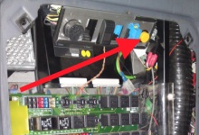

Note:
If you press the blink code switch and the ABS lamp only blink once for 0.5 sec., then there's no fault in the ABS system.
Test prerequisites:
Parking brake applied.
Ignition on, engine off.
Procedure:
Press the blink code switch to start the function.

If there´s more than one fault, the blink codes will appear in a sequence starting with the latest one first.
The blink codes are devided up into two different parts, "Component" and "Mode".
For the first part the lamp blinks with 0.5 sec. interval, then it´s 1.5 sec. pause for the next part.
Ex. *_*_1.5 sec._*_* = 02_02 (Missing sensor signal at drive off _WSS SA left).
When more then one fault is in the system the blink codes will appear in a sequence with a pause of 4.5 sec. between the codes, starting with the latest one first.
Ex. *_* _*_1.5 sec._*___ 4.5 sec.___*_*_*_1.5 sec._*_*_*_* = 03_01 (Large airgap_WSS SA right) and 03_04 (Long term instability_WSS SA right).
When WSS or Airgap related fault occurred, the warning lamp won´t go off after the cause is corrected. Fault code D0h will be erased automatically after ECU get valid WSS signal in several driving.
| Internal code HEX | Internal code DEC | Standard blink code | Standard blink code | Description (Mode) | Component | Warning lamp | Traction control lamp |
| 00h | 0 | 01 | 01 | No failure | |||
| 47h | 71 | 02 | 01 | Large airgap | WSS SA left | X | X |
| 48h | 72 | 02 | 02 | Missing sensor signal at drive off | WSS SA left | X | X |
| 45h | 69 | 02 | 03 | Bad toothwheel, long term ABS control | WSS SA left | X | X |
| 49h | 73 | 02 | 04 | Long term instability | WSS SA left | X | X |
| 4Ah | 74 | 02 | 05 | Loss of sensor signal | WSS SA left | X | X |
| 41h | 65 | 002 | 06 | Shorted low/high or broken wire or two sensors shorted | WSS SA left | X | X |
| 4Bh | 75 | 02 | 07 | Reserved for wheel speed sensor | WSS SA left | X | X |
| 87h | 135 | 03 | 01 | Large airgap | WSS SA right | X | X |
| 88h | 136 | 03 | 02 | Missing sensor signal at drive off | WSS SA right | X | X |
| 85h | 133 | 03 | 03 | Bad toothwheel, long term ABS control | WSS SA right | X | X |
| 89h | 137 | 03 | 04 | Long term instability | WSS SA right | X | X |
| 8Ah | 138 | 03 | 05 | Loss of sensor signal | WSS SA right | X | X |
| 81h | 129 | 03 | 06 | Shorted low/high or broken wire or two sensors shorted | WSS SA right | X | X |
| 8Bh | 139 | 03 | 07 | Reserved for wheel speed sensor | WSS SA right | X | X |
| A7h | 167 | 04 | 01 | Large airgap | WSS DA left | X | X |
| A8h | 168 | 04 | 02 | Missing sensor signal at drive off | WSS DA left | X | X |
| A5h | 165 | 04 | 03 | Bad toothwheel, long term ABS control | WSS DA left | X | X |
| A9h | 169 | 04 | 04 | Long term instability | WSS DA left | X | X |
| AAh | 170 | 04 | 05 | Loss of sensor signal | WSS DA left | X | X |
| A1h | 161 | 04 | 06 | Shorted low/high or broken wire or two sensors shorted | WSS DA left | X | X |
| ABh | 171 | 04 | 07 | Reserved for wheel speed sensor | WSS DA left | X | X |
| 67h | 103 | 05 | 01 | Large airgap | WSS DA right | X | X |
| 68h | 104 | 05 | 02 | Missing sensor signal at drive off | WSS DA right | X | X |
| 65h | 101 | 05 | 03 | Bad toothwheel, long term ABS control | WSS DA right | X | X |
| 69h | 105 | 05 | 04 | Long term instability | WSS DA right | X | X |
| 6Ah | 106 | 05 | 05 | Loss of sensor signal | WSS DA right | X | X |
| 61h | 97 | 05 | 06 | Shorted low/high or broken wire or two sensors shorted | WSS DA right | X | X |
| 6Bh | 107 | 05 | 07 | Reserved for wheel speed sensor | WSS DA right | X | X |
| 07h | 7 | 06 | 01 | Large airgap | WSS AA left | X | X |
| 08h | 8 | 06 | 02 | Missing sensor signal at drive off | WSS AA left | X | X |
| 05h | 5 | 06 | 03 | Bad toothwheel, long term ABS control | WSS AA left | X | X |
| 09h | 9 | 06 | 04 | Long term instability | WSS AA left | X | X |
| 0Ah | 10 | 06 | 05 | Loss of sensor signal | WSS AA left | X | X |
| 01h | 1 | 06 | 06 | Shorted low/high or broken wire or two sensors shorted | WSS AA left | X | X |
| 0Bh | 11 | 06 | 07 | Reserved for wheel speed sensor | WSS AA left | X | X |
| 03h | 3 | 06 | 08 | Sensor detected but not configured | WSS AA left | X | X |
| C7h | 199 | 07 | 01 | Large airgap | WSS AA right | X | X |
| C8h | 200 | 07 | 02 | Missing sensor signal at drive off | WSS AA right | X | X |
| C5h | 197 | 07 | 03 | Bad toothwheel, long term ABS control | WSS AA right | X | X |
| C9h | 201 | 07 | 04 | Long term instability | WSS AA right | X | X |
| CAh | 202 | 07 | 05 | Loss of sensor signal | WSS AA right | X | X |
| C1h | 193 | 07 | 06 | Shorted low/high or broken wire or two sensors shorted | WSS AA right | X | X |
| CBh | 203 | 07 | 07 | Reserved for wheel speed sensor | WSS AA right | X | X |
| C3h | 195 | 07 | 08 | Sensor detected but not configured | WSS AA right | X | X |
| 57h | 87 | 08 | 01 | Release solenoid shorted high | PCV SA left | X | X |
| 56h | 86 | 08 | 02 | Release solenoid shorted low | PCV SA left | X | |
| 55h | 85 | 08 | 03 | Release solenoid broken wire | PCV SA left | X | |
| 54h | 84 | 08 | 04 | Valve ground broken wire | PCV SA left | X | |
| 53h | 83 | 08 | 05 | Hold solenoid shorted high | PCV SA left | X | X |
| 52h | 82 | 08 | 06 | Hold solenoid shorted low | PCV SA left | X | |
| 51h | 81 | 08 | 07 | Hold solenoid broken wire | PCV SA left | X | |
| 5Dh | 93 | 08 | 08 | Valve configuration error | PCV SA left | X | |
| DCh | 220 | 08 | 10 | Difflock solenoid shorted high | Aux I/0 | X | X |
| DDh | 221 | 08 | 11 | Difflock solenoid shorted low or broken wire | Aux I/0 | X | |
| 97h | 151 | 09 | 01 | Release solenoid shorted high | PCV SA right | X | X |
| 96h | 150 | 09 | 02 | Release solenoid shorted low | PCV SA right | X | |
| 95h | 149 | 09 | 03 | Release solenoid broken wire | PCV SA right | X | |
| 94h | 148 | 09 | 04 | Valve ground broken wire | PCV SA right | X | |
| 93h | 147 | 09 | 05 | Hold solenoid shorted high | PCV SA right | X | X |
| 92h | 146 | 09 | 06 | Hold solenoid shorted low | PCV SA right | X | |
| 91h | 145 | 09 | 07 | Hold solenoid broken wire | PCV SA right | X | |
| 9Dh | 157 | 09 | 08 | Valve configuration error | PCV SA right | X | |
| B7h | 183 | 10 | 01 | Release solenoid shorted high | PCV DA left | X | X |
| B6h | 182 | 10 | 02 | Release solenoid shorted low | PCV DA left | X | X |
| B5h | 181 | 10 | 03 | Release solenoid broken wire | PCV DA left | X | X |
| B4h | 180 | 10 | 04 | Valve ground broken wire | PCV DA left | X | X |
| B3h | 179 | 10 | 05 | Hold solenoid shorted high | PCV DA left | X | X |
| B2h | 178 | 10 | 06 | Hold solenoid shorted low | PCV DA left | X | X |
| B1h | 177 | 10 | 07 | Hold solenoid broken wire | PCV DA left | X | X |
| BDh | 189 | 10 | 08 | Valve configuration error | PCV DA left | X | X |
| 29h | 41 | 10 | 10 | Valve ground or solenoid shunt to supply voltage | PCV | X | X |
| 2Ah | 42 | 10 | 11 | Valve GND or sol. shunt to GND or int. GND SW defective | PCV | X | X |
| 77h | 119 | 11 | 01 | Release solenoid shorted high | PCV DA right | X | X |
| 76h | 118 | 11 | 02 | Release solenoid shorted low | PCV DA right | X | X |
| 75h | 117 | 11 | 03 | Release solenoid broken wire | PCV DA right | X | X |
| 74h | 116 | 11 | 04 | Valve ground broken wire | PCV DA right | X | X |
| 73h | 115 | 11 | 05 | Hold solenoid shorted high | PCV DA right | X | X |
| 72h | 114 | 11 | 06 | Hold solenoid shorted low | PCV DA right | X | X |
| 71h | 113 | 11 | 07 | Hold solenoid broken wire | PCV DA right | X | X |
| 7Dh | 125 | 11 | 08 | Valve configuration error | PCV DA right | X | X |
| E7h | 231 | 12 | 01 | Release solenoid shorted high | PCV AA left | X | X |
| E6h | 230 | 12 | 02 | Release solenoid shorted low | PCV AA left | X | X |
| E5h | 229 | 12 | 03 | Release solenoid broken wire | PCV AA left | X | X |
| E4h | 228 | 12 | 04 | Valve ground broken wire | PCV AA left | X | X |
| E3h | 227 | 12 | 05 | Hold solenoid shorted high | PCV AA left | X | X |
| E2h | 226 | 12 | 06 | Hold solenoid shorted low | PCV AA left | X | X |
| E1h | 225 | 12 | 07 | Hold solenoid broken wire | PCV AA left | X | X |
| EDh | 237 | 12 | 08 | Valve configuration error | PCV AA left | X | X |
| F7h | 247 | 13 | 01 | Release solenoid shorted high | PCV AA right | X | X |
| F6h | 246 | 13 | 02 | Release solenoid shorted low | PCV AA right | X | X |
| F5h | 245 | 13 | 03 | Release solenoid broken wire | PCV AA right | X | X |
| F4h | 244 | 13 | 04 | Valve ground broken wire | PCV AA right | X | X |
| F3h | 243 | 13 | 05 | Hold solenoid shorted high | PCV AA right | X | X |
| F2h | 242 | 13 | 06 | Hold solenoid shorted low | PCV AA right | X | X |
| F1h | 241 | 13 | 07 | Hold solenoid broken wire | PCV AA right | X | X |
| FDh | 253 | 13 | 08 | Valve configuration error | PCV AA right | X | X |
| 3Ch | 60 | 14 | 05 | TC solenoid shorted high | TCV DA | X | X |
| 3Bh | 59 | 14 | 06 | TC solenoid shorted low | TCV DA | X | |
| 3Ah | 58 | 14 | 07 | TC solenoid broken wire | TCV DA | X | |
| 3Dh | 61 | 14 | 08 | TC valve configuration error | TCV DA | X | |
| 10h | 16 | 15 | 01 | ABS-CPU fault | ECU | X | X |
| 11h | 17 | 15 | 02 | ABS-CPU fault | ECU | X | X |
| 17h | 23 | 15 | 03 | ABS-CPU EEPROM data error | ECU | X | X |
| 18h | 24 | 15 | 04 | ABS-CPU EEPROM not programmable | ECU | X | X |
| 13h | 19 | 15 | 05 | ABS-CPU fault | ECU | X | X |
| 14h | 20 | 15 | 06 | ABS-CPU fault | ECU | X | X |
| 12h | 18 | 15 | 07 | ABS-CPU fault | ECU | X | X |
| 15h | 21 | 15 | 08 | ABS-CPU fault | ECU | X | X |
| 16h | 22 | 15 | 09 | ABS-CPU invalid configuration in EEPROM | ECU | X | X |
| 1Ah | 26 | 15 | 10 | Internal relay not switchable | ECU | X | X |
| 1Bh | 27 | 15 | 11 | Internal relay permanently turned on | ECU | X | X |
| 80h | 128 | 15 | 15 | ABS software not compatible with hardware | ECU | X | X |
| 23h | 35 | 16 | 01 | U-bat temporary over voltage | Supply | X | |
| 24h | 36 | 16 | 02 | U-bat temporary low voltage | Supply | X | |
| 25h | 37 | 16 | 02 | U-bat low voltage during ABS control | Supply | X | X |
| 26h | 38 | 16 | 03 | U-bat broken wire | Supply | X | X |
| 82h | 130 | 16 | 04 | Supply voltage temporary powerline noise | Supply | X | X |
| 83h | 131 | 16 | 04 | Supply voltage powerline noise | Supply | X | X |
| 20h | 32 | 16 | 09 | U-ign temporary over voltage | Supply | X | |
| 21h | 33 | 16 | 10 | U-ign temporary low voltage | Supply | X | |
| 22h | 34 | 16 | 10 | U-ign low voltage during ABS control | Supply | X | X |
| 30h | 48 | 17 | 01 | Retarder relay shorted high | Ref.relay | X | |
| 31h | 49 | 17 | 02 | Retarder relay shorted low or broken wire | Ref.relay | X | |
| DBh | 219 | 17 | 03 | ABS disabled due to engaged difflock | ABS function | X | |
| D2h | 210 | 17 | 05 | Tires or learned parameters(FRT,RR) out of range | Tire size | X | X |
| 1Fh | 31 | 17 | 06 | Reserved c3-signal plausibility check | Tire size | X | X |
| D5h | 213 | 17 | 07 | Stop light switch not activated in this power on cycle | Stop light | X | |
| D6h | 214 | 17 | 08 | ATC or ESP disabled or rollerbench mode active | ATC function | X | |
| D7h | 215 | 17 | 09 | ABS disabled due to off road mode | ABS function | X | |
| D1h | 209 | 17 | 10 | GND-WL broken wire or WL switched to GND permanently | Lamps | X | |
| AFh | 175 | 17 | 11 | ATC brake control time limit exceeded | ATC function | X | |
| D0h | 208 | 17 | 12 | WSS failure in previous power on cycle | WSS | X | X |
| D4h | 212 | 17 | 13 | WSS mixed up | WSS | X | X |
| D8h | 216 | 17 | 14 | Stop light switch defective | Stop light | X | |
| 33h | 51 | 18 | 03 | J1939 or IES CAN bus off detected | J1939/IES | X | X |
| 34h | 52 | 18 | 04 | Timeout or invalid data on ERC1 (J1939) / FMR2 (IES) | J1939/IES | X | |
| 35h | 53 | 18 | 05 | Timeout or invalid data on EEC1..3 (J1939) / FMR1..3 (IES) | J1939/IES | X | |
| 36h | 54 | 18 | 06 | Timeout or invalid data on ETC1..2 (J1939) / INS,EPS (IES) | J1939/IES | X |